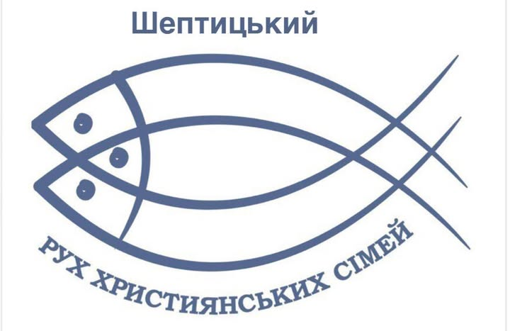

План зустрічей на перше півріччя 2026 року
Січень
04.01
Вертеп та коляда у Львові
18.01
Вертеп та розколяда в спільноті
25.01
Участь у парафіяльній розколяді
Лютий
01.02
Вертеп та зустріч зі спільнотою церкви Св. Йосафата
Тема: «Весілля в Кані Галилейській»
Спікери: Мар’ян та Ольга Гавалко
15.02
Курс «Сім’я — домашня Церква», 1-ша тема
о. Йоан Школик
20.02
Адорація